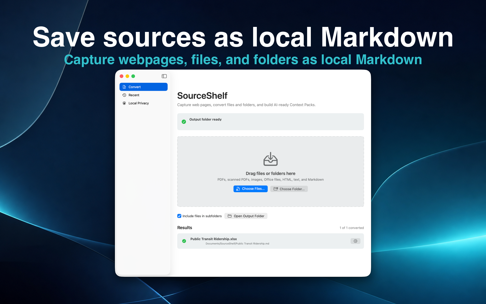
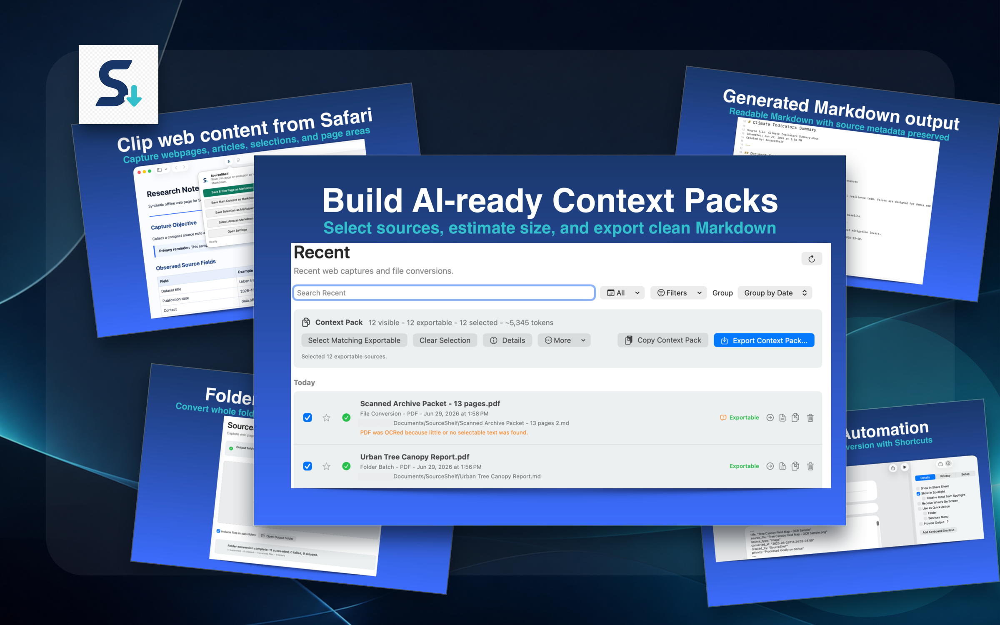
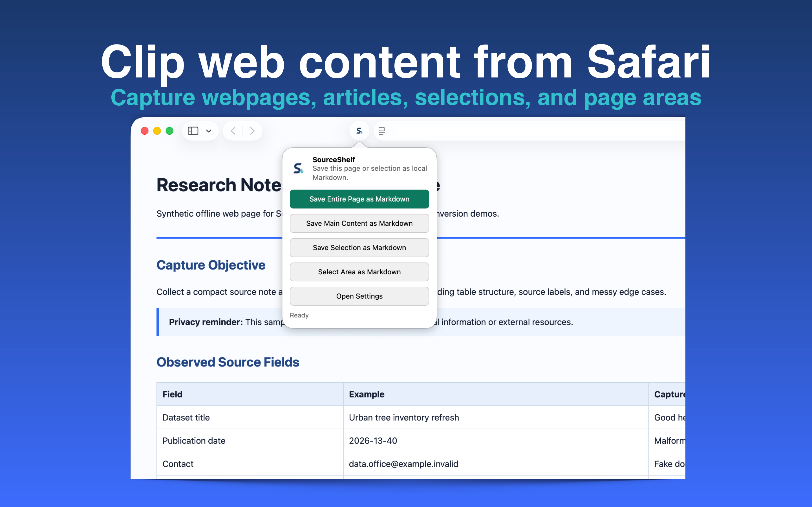
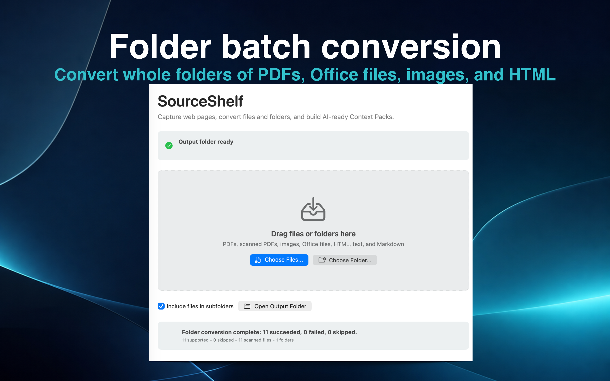
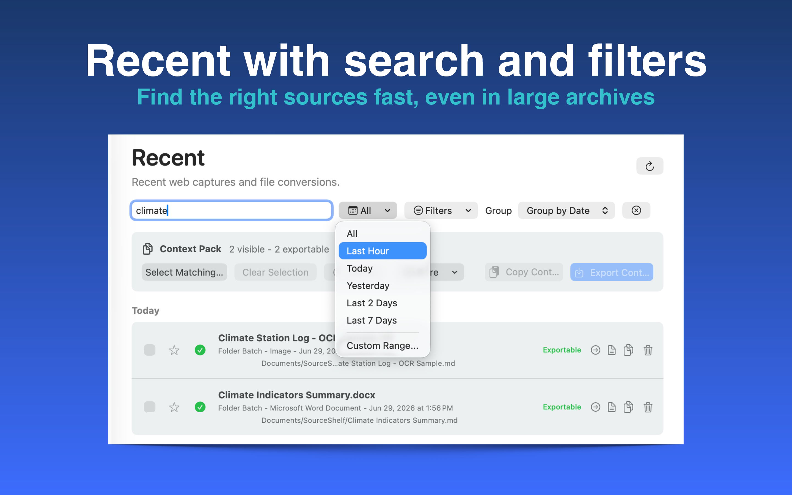
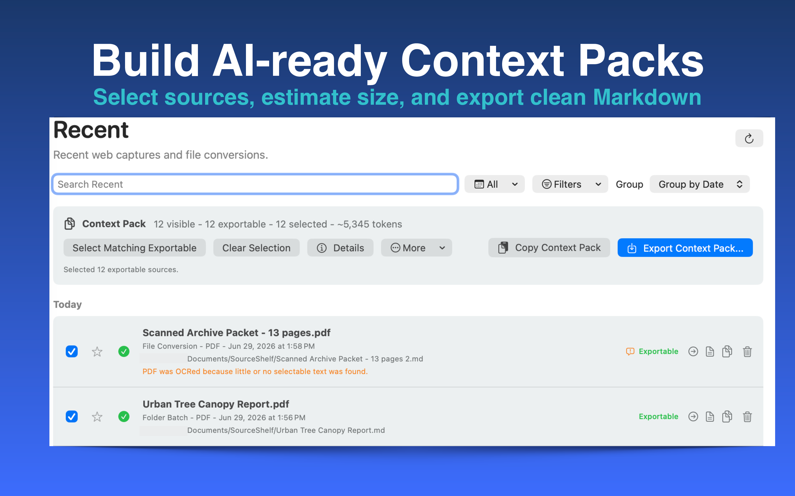
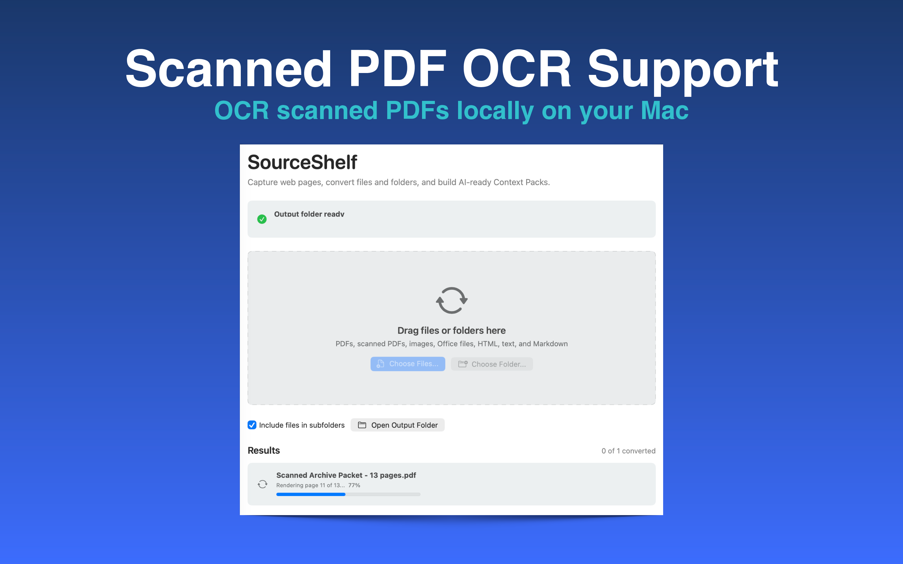
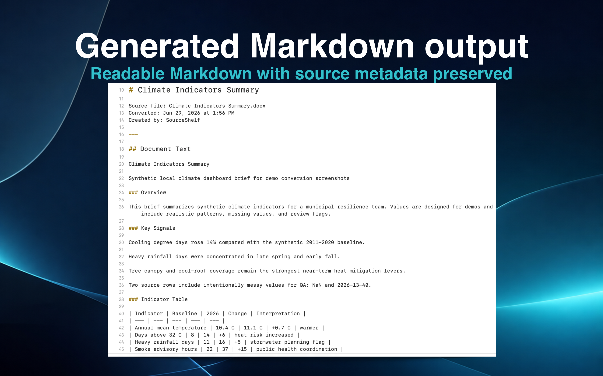
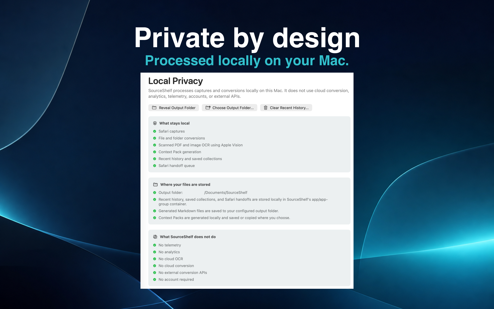
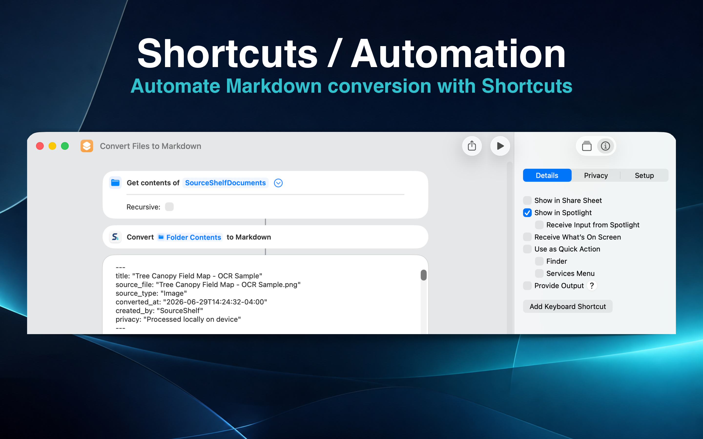

01
Save sources as local Markdown
Capture webpages, files, and folders as clean Markdown with source metadata preserved.

Turn webpages, files, and folders into local Markdown source packs.
Capture web pages from Safari, convert documents and folders to Markdown, and build AI-ready Context Packs — all locally on your Mac.

What it does
Capture, convert, search, and package local source files without sending your work to a cloud conversion service.
Capture webpages, files, and folders as clean Markdown with source metadata preserved.

Save full pages, main content, selected text, or visible page areas directly from Safari.

Convert whole folders of PDFs, Office files, images, HTML, text, and Markdown.

Find the right sources fast, even when your local archive grows.

Select sources, estimate size, and export or copy one clean Markdown pack for AI tools or long-term archives.

OCR scanned PDFs and images locally on your Mac.

Readable Markdown with source metadata preserved.

No cloud conversion, no telemetry, no analytics, and no account required.

Automate Markdown conversion with Apple Shortcuts.

Details
.doc, .ppt, .xls are not currently supported.